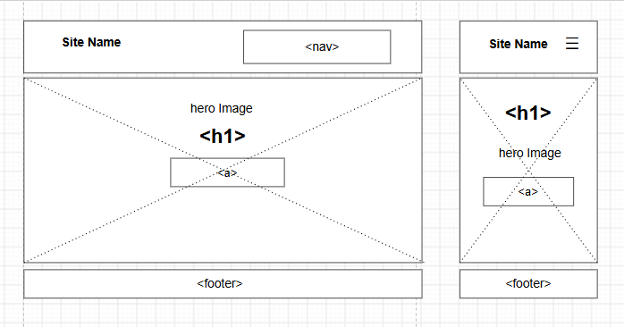
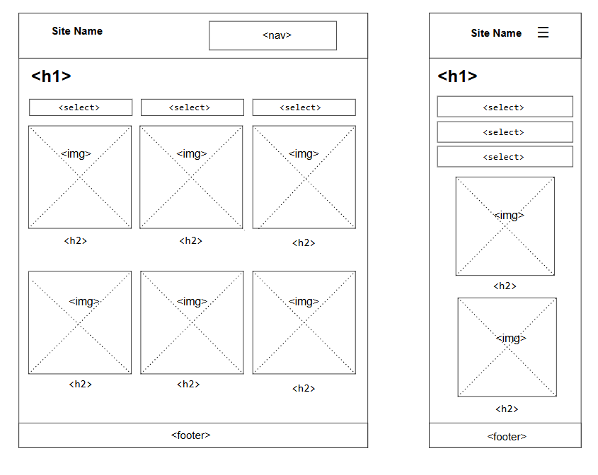
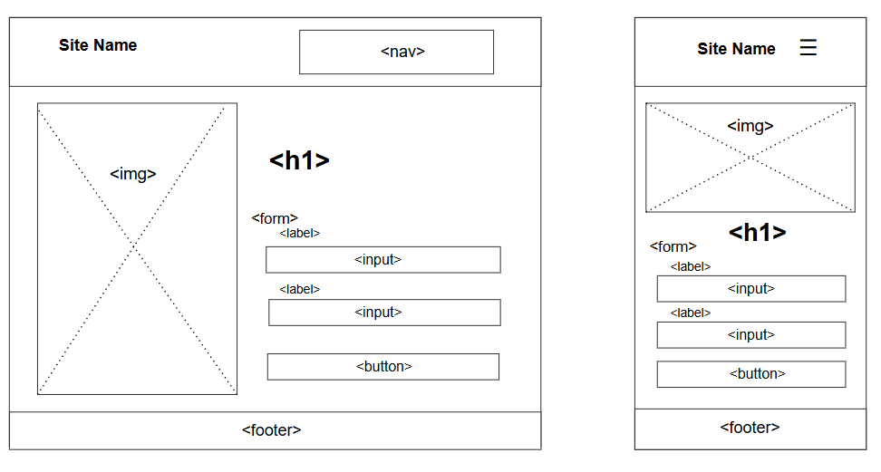

Site Name
Rio de Janeiro: The Marvelous City
This name reflects the identity of Rio de Janeiro and the variety of experiences the city offers.
Site Purpose
The purpose of this website is to promote Rio de Janeiro through its landscapes, culture, history, local cuisine, and leisure activities, encouraging residents and visitors to enjoy the city at their own pace.
The website will feature curated itineraries organized by region and time of day, with photographs, suggested activities, and practical information. Users will be able to explore itineraries, save their favorites, and sign up for a newsletter with new outing suggestions.
Scenarios
- What can I do in Rio de Janeiro today?
- What outings are available in my preferred region?
- How can I plan a morning, afternoon, evening, or full-day outing?
- Where can I find practical information about each itinerary?
- How can I save my favorite itineraries?
- How can I receive new outing suggestions?
Color Schema
White — #FFFFFF
Main background and visual spacing.
Black — #171717
Headings, body text, buttons, icons, and dividing lines.
The neutral color scheme allows the photographs to bring color, movement, and personality to the website.
Typography
Space Grotesk
Used for headings and featured titles to create a modern and expressive visual identity.
What's good today?
DM Sans
Used for body text, navigation, buttons, and forms to ensure readability and consistency.
Enjoy Rio at your own pace.
Wireframes


